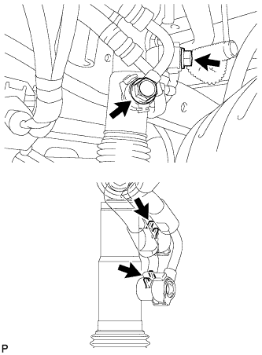
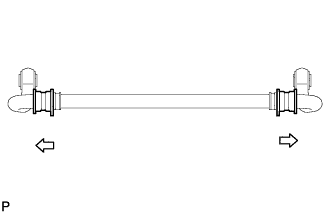
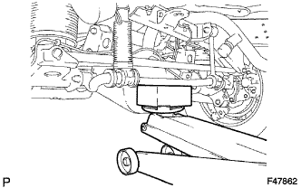
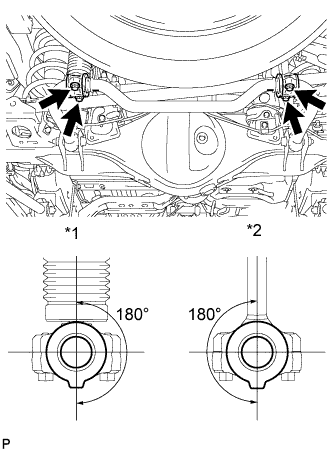

ЗАДНИЙ СТАБИЛИЗАТОР ПОПЕРЕЧНОЙ УСТОЙЧИВОСТИ (для моделей с KDSS) > УСТАНОВКА |
| 1. УСТАНОВИТЕ СТОЙКУ ЗАДНЕГО СТАБИЛИЗАТОРА В СБОРЕ |
Установите стойку заднего стабилизатора в сборе и закрепите ее болтом и гайкой.
| 2. УСТАНОВИТЕ ЦИЛИНДР УПРАВЛЕНИЯ ЗАДНЕГО СТАБИЛИЗАТОРА |
Установите 2 колпачка прокачных штуцеров на цилиндр управления заднего стабилизатора.
Установите цилиндр управления заднего стабилизатора и закрепите его болтом и гайкой.
| 3. ПОДСОЕДИНИТЕ РЕГУЛИРОВОЧНУЮ ТРУБКУ ЗАДНЕГО СТАБИЛИЗАТОРА В СБОРЕ |
|  |
Подсоедините регулировочную трубку заднего стабилизатора к цилиндру управления заднего стабилизатора, закрепив ее 2 пустотелыми соединительными болтами-штуцерами и 2 новыми прокладками выпускного отверстия.
| 4. ПРЕДВАРИТЕЛЬНО ЗАКРЕПИТЕ ЗАДНИЙ СТАБИЛИЗАТОР ПОПЕРЕЧНОЙ УСТОЙЧИВОСТИ В СБОРЕ |
|  |
Установите 2 втулки заднего стабилизатора на штангу заднего стабилизатора.
 | Наружная сторона |
Предварительно закрепите задний стабилизатор поперечной устойчивости 2 болтами и гайками.
| 5. УСТАНОВИТЕ НИЖНИЙ КРОНШТЕЙН ЗАДНЕГО СТАБИЛИЗАТОРА |
|  |
Поддомкратьте задний стабилизатор поперечной устойчивости.
|  |
Установите штангу заднего стабилизатора и 2 нижних кронштейна заднего стабилизатора, закрепив их 4 болтами.
| *1 | Цилиндр управления заднего стабилизатора |
| *2 | Стойка заднего стабилизатора |
| 6. УДАЛИТЕ ВОЗДУХ ИЗ ЖИДКОСТИ ПОДВЕСКИ |
Удалите воздух из жидкости подвески (Нажмите здесь).
| 7. ДОБЕЙТЕСЬ УСТОЙЧИВОСТИ ПОДВЕСКИ |
Опустите автомобиль.
Стабилизируйте подвеску, несколько раз покачав автомобиль вверх-вниз.
| 8. ЗАКРЕПИТЕ ЗАДНИЙ СТАБИЛИЗАТОР ПОПЕРЕЧНОЙ УСТОЙЧИВОСТИ В СБОРЕ |
Затяните 2 болта и 2 гайки.
| 9. УСТАНОВИТЕ ЗАЩИТУ РАСПРЕДЕЛИТЕЛЯ СТАБИЛИЗАТОРА |
Установите защиту распределителя стабилизатора и закрепите ее 2 болтами.
| 10. УСТАНОВИТЕ ЛЕВЫЙ ПОРОГ В СБОРЕ (для 5-дверных моделей) |
Установите боковой порог и закрепите его 6 болтами.
Для моделей с подсветкой:
Подсоедините 2 разъема.
| 11. ПРОВЕРЬТЕ ВЫСОТУ АВТОМОБИЛЯ |
Проверьте высоту подвески автомобиля (Нажмите здесь).